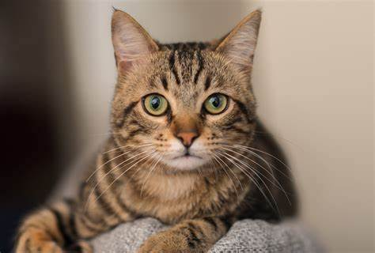

Welcome To My Portfolio
In this website, you are able to see the things about myself and learn some new information about me. As you can see in the buttons beside you are the different sections about me. Feel free to interact with those buttons. I hope after seeing this website, you're able to get to know me better.
Here's A Photo Of Me!
How I Made This Website:
Obviously, I didn't do this alone. With the help of youtube tutorials, AI suggestions and Internet Tutorials, I am able to make this website. Without them, my website wouldn't be sucessful. The Coding App that I used is VSCode. They are one of the best coding app's that you should definetly try out.
Basic Information About Me:
Name: Matt Tyler D. Obedencio
Age: 13
Birthday: October 3, 2009
Favorite Hobbies: Badminton, Chess, and Playing Games
Favorite Animals: Cats and Dogs
Favorite Colors: Beige, White, and Black
Mother's Name: Winda D. Obedencio
Father's Name: Raul B. Obedencio
Favorite Hobbies:

Favorite Animals:

Favorite Colors:
Chess: My Favorite Sport
I used to hate chess when I was a child. But once I figured out how to play, figure out new strategies and new skills, I got obsessed with the game. Everytime I woke up, Chess is the first app I will open before doing daily activities. But until now, I'm still bad at the game but I am slowly improving.
I will show you some of my recent games in chess. Here are some recent checkmates that I have done against my opponents
My Favorite Chess Openings:
1. Kings Indian Defense
2. Kings Gambit
3. Queens Gambit
4. London System
5. Indian Game
My Favorite Apps:
Here Are Apps That I Often Use On My Devices:
1. Chess.com - I always open this app everytime I get bored. Chess always makes my day feel better when I'm stressed especially on school projects.
2. Tiktok - My daily app to open. Tiktok helps me because it gives me entertainment and fun which can lessen stress and more.
3. Youtube - I always open this up whether I need tutorials on something. It also has a feature called Youtube Shorts. Which is similar to Tiktok.

4. Messenger - I open this up because of personal, school, and fun reasons. I always Usethis app to communicate with many people. Especially my parents and teachers.
5. Play Store - I always use this app whether I need to download important app or games.
My Favorite Subjects:
1 . Math - I love math. It is my most favorite subject of all time. I love the problem solving. I'm used to it. Infact, I've already learned some calculus.
2 . ICT - I love ICT. It helps me get better with computer technology and helps me on how to create a website. Like thus website I just created.
3 . English - I love English. It's An Easy Subject Since It Just Involves Correct Grammar And Essays.
4 . Research - I love Research. It helps me get better at making research proposals which is very useful when I get to college.